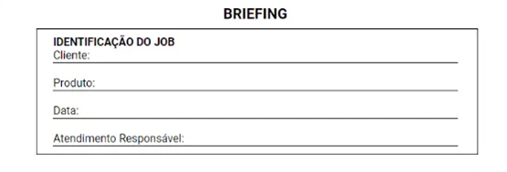

Existem algumas dicas que podem contribuir para a produção de um briefing de sucesso e capaz de direcionar de maneira assertiva as equipes que criarão as futuras propostas. Na introdução é sempre bom identificar as partes envolvidas e que são os responsáveis.
